الاسم المستخدم
INTAG Digital Solutions. ويظل الاسم القانوني بحاجة إلى توثيق.
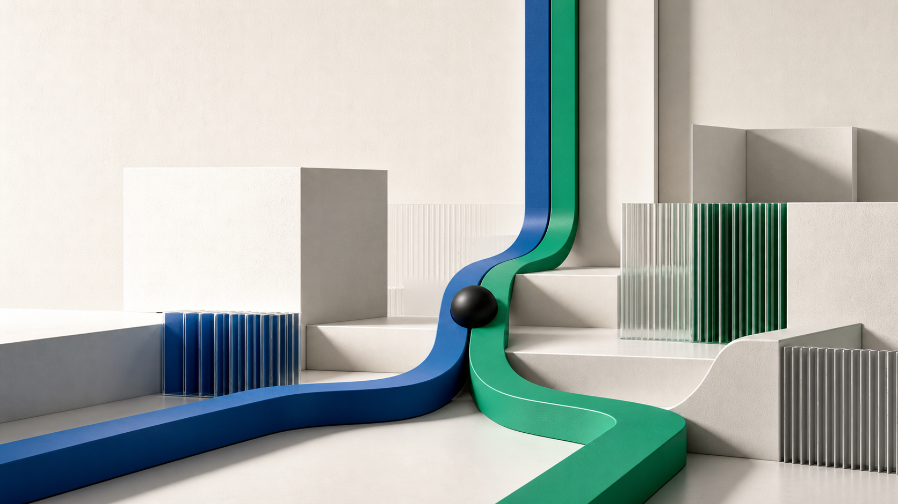
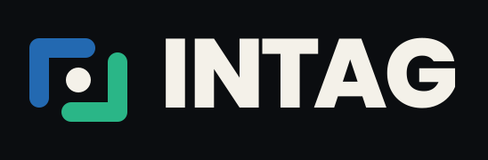
نظام الهوية / الإصدار 2.0 — نسخة عمل
نظام هوية بصرية واستراتيجية متكامل
لـ INTAG Digital Solutions
01 / الحالة والنطاق
أُعدّت هذه النسخة استنادًا إلى الاسم ووصف الشركة والخدمات التي قدّمها المستخدم، وإلى الشعار السابق بوصفه مرجعًا. وقد اعتمد المستخدم الشعار رقم 02؛ أما بقية القرارات الاستراتيجية واشتراطات الإطلاق فما تزال قيد المراجعة.
INTAG Digital Solutions. ويظل الاسم القانوني بحاجة إلى توثيق.
مركز للتقنية والإعلام ووكالة للتوسع الرقمي، تقدم خدمات التقنية والعلامة التجارية والتسويق والإعلام واستشارات الأعمال والتطوير.
اعتمد المستخدم الخيار رقم 02 «Connected Frame» أساسًا لهذه النسخة بتاريخ 2026-08-02.
الجمهور، والاسم العربي، وهيكل الخدمات، والتوجه الإبداعي، والحقوق القانونية، ومسؤول الاعتماد.
02 / الملخص التنفيذي
قد تبدو الخدمات قائمة منفصلة إذا لم تتضح نقطة البداية، والعلاقة بينها، والنتيجة التي تعمل من أجلها.
التحول الاستراتيجي المقترح
من قائمة خدمات متفرقة إلى منظومة تجمع القدرات حول هدف واحد.
يربط التصور المقترح الاستراتيجية واستشارات الأعمال، والعلامة التجارية والإعلام، والتقنية والمنتجات الرقمية، والتسويق والنمو حول مشكلة محددة ومسؤوليات واضحة ومقاييس نجاح متفق عليها.
03 / مشكلة العلامة
قبل: قائمة خدمات
قد تبدو كقائمة واسعة ما لم نوضح أين تبدأ، لماذا تجتمع القدرات، وكيف نقيس النتيجة.
بعد: منظومة مترابطة
نبدأ بفهم الفرصة، ثم نحوّلها إلى حل قابل للاستخدام، ونختبر أثره ونحسّنه. وتظل الخدمات أدوات مرنة داخل المنظومة، لا وعدًا بجمعها كلها في كل مشروع.
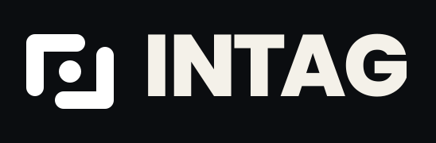
04 / التموضع المقترح
نقترح تقديم INTAG للشركات الطموحة التي تعوقها الفجوة بين الاستراتيجية والتنفيذ بوصفها شريكًا يربط استراتيجية الأعمال بالعلامة التجارية والإعلام والتقنية والمنتجات الرقمية داخل منظومة قابلة للتنفيذ والاختبار والتحسين.
05 / فرضيات الجمهور
قد يحتاجون إلى جهة تنسّق بين تخصصات متعددة، وتوضح الأولويات قبل تخصيص الميزانية.
قد يحتاجون إلى تحريك العلامة والإعلام والبيانات والتقنية حول أهداف ومقاييس متفق عليها.
قد تحتاج إلى تحويل الفكرة إلى تجربة أو نظام يعمل قبل التوسع.
فرضية يجب التحقق من أولوية هذه الشرائح والقطاعات والأسواق من خلال مسار الفرص، وتوزيع الإيرادات، ومقابلات العملاء.
06 / فكرة العلامة المقترحة
ونتائجها تُقاس.
تركّز الفكرة المقترحة على المنهج والدليل والمخرجات. وهي لا تعد بمبيعات أو إيرادات أو أداء تقني من دون دليل وحدود واضحة.
07 / تراتب الرسائل والوعد — مقترح
الوعد الخارجي المقترح
يركز الوعد على بناء النظام المناسب للمشكلة، لا على ملاحقة الصيحات أو عرض قائمة ثابتة من الخدمات. ويحتاج إلى إثبات قدرة التسليم قبل نشره.
BRAND BRIEF
نؤمن بأن النمو المستدام يتطلب غالبًا جمع الاستراتيجية والعلامة التجارية والإعلام والتقنية حول هدف ومقاييس متفق عليها.
«من الإمكان إلى الإنجاز» توجه إبداعي مقترح، وليس عبارة تعريفية معتمدة. أما «Built for Growth» فهو وصف منقول من Brand Brief، ويحتاج إلى قرار قبل أي استخدام خارجي.
08 / مبادئ العمل المقترحة
ابدأ بفهم المشكلة والمستخدم والقرار والنتيجة قبل إنتاج المخرجات.
اربط كل تخصص بنتيجة مشتركة، لا بأجندة منفصلة.
استخدم التقنية عندما تضيف أثرًا واضحًا يمكن قياسه وتطويره.
ابنِ واختبر وتعلّم وحسّن من دون ضمانات أو ضجيج تسويقي.
09 / شخصية العلامة — قيد المراجعة
يبني منظومات، ويهتم بجودة الصنعة، ويحوّل الغموض إلى هيكل واضح.
يفهم الأعمال، ويشرح المعقّد ببساطة، ولا يثقل القرار بالمصطلحات.
جريء وسريع، لكنه لا يخلط السرعة بالوعود أو الفوضى.
10 / نبرة الخطاب
استخدم
تجنّب
«عندما تعمل الخدمات منفصلة، لا يحل تعددها المشكلة. المطلوب أن ترتبط بهدف واضح ومسؤولية محددة ومقاييس نجاح متفق عليها.»
11 / هيكل مجالات الخبرة المقترح
قد تشمل الاستكشاف والبحث والتموضع والتخطيط والاستشارات ودعم القرار.
قد تشمل الاستراتيجية والهوية والمحتوى والإنتاج الإبداعي والحملات وأنظمة الإعلام.
قد تشمل المواقع والمنصات والمنتجات الرقمية والنماذج الأولية والأتمتة.
قد تشمل الوصول إلى السوق والتسويق بالأداء والتجارب والقياس والتحسين.
سؤال مفتوح لا يزال معنى «التطوير» غير محسوم: هل هو تطوير المنتجات والبرمجيات أم تطوير الأعمال؟ هذه خريطة مقترحة لمجالات الخبرة، وليست قائمة عروض نهائية. وقبل النشر، يجب تصنيف كل مجال إلى متاح حاليًا، أو مخطط له، أو منفذ عبر شريك، مع تحديد المسؤول والدليل.
12 / اتجاهات الشعار — قرار معتمد
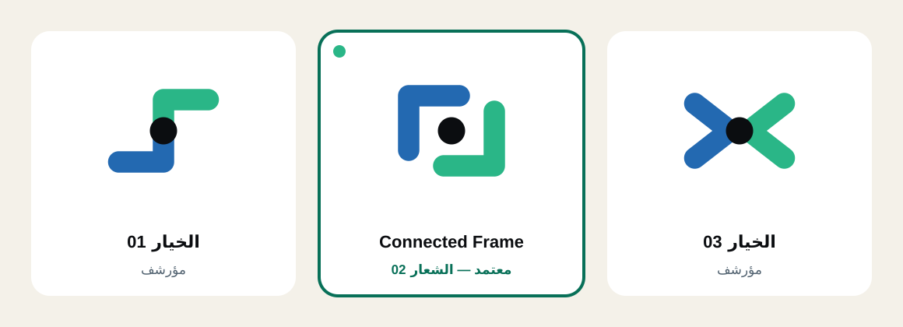
قرار معتمد يعتمد Connected Frame على مسارين متكاملين يحيطان بنقطة تركيز واحدة، ويعبّر عن جمع قدرات مختلفة حول هدف مشترك من دون محو تميز كل قدرة.
13 / الاتجاه المعتمد للشعار
وضوح في التفكير، واتصال في التنفيذ.
14 / الشعار الرئيسي المعتمد
Connected Frame مع Custom Wordmark · الخيار 02 · معتمد في 2026-08-02 · الإصدار 2.0
15 / منطق الشعار
يعبّر عن التفكير الاستراتيجي والمعرفة وتحديد الاتجاه.
يعبّر عن البناء والتفعيل والنمو القابل للقياس.
تمثل القرار أو النتيجة المشتركة التي تجتمع حولها القدرات.
يربط العناصر من دون أن يغلقها أو يوحي بنتيجة مضمونة.
16 / بناء الشعار ومساحة الحماية
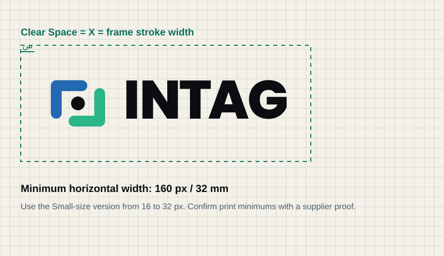
س = قطر النقطة داخل الرمز. يجب ألا يدخل أي نص أو حافة أو شعار شريك أو جزء مقصوص داخل مساحة الحماية. وتبقى القيمة النهائية خاضعة لاختبار هندسة الخيار 02.
17 / منظومة الشعار
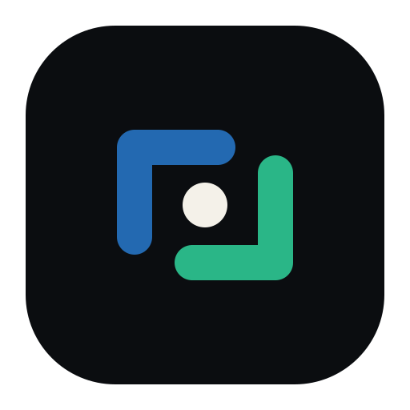
18 / نسخ الألوان
الافتراضية / خلفية فاتحة
المعكوسة / خلفية داكنة
لون واحد
أبيض خالص
19 / الحجم والخلفيات والشراكات البصرية
حدود مبدئية للاختبار
حد مقترح للشعار الأفقي، وينتظر اختبار التنفيذ.
استخدم رمز الأحجام الصغيرة عند 32 بكسل وما دون؛ ويظل الحد الأدنى النهائي بانتظار الاختبار.
الخلفيات
استخدم لونًا مسطحًا أو صورة هادئة مع تباين واضح.
الشراكات البصرية
وازن الارتفاع البصري، وأضف فاصلًا ومساحة حماية تساوي س. لا تدمج العلامتين.
20 / الاستخدامات غير الصحيحة
لا تمدد الشعار أو تضغطه.
لا تدوّر الشعار عشوائيًا.
لا تضف ظلًا أو مؤثرات.
لا تستخدم خلفية تتعارض مع اللون.
لا تحوّل الشعار عشوائيًا إلى تدرج رمادي.
استخدم الملف الأصلي المعتمد كما هو.
21 / الألوان الأساسية
النسب الإرشادية: 70% للدرجات المحايدة، و20% لمساحات الأزرق والأخضر، و10% للنقاط والتفاصيل البارزة. قيم CMYK تقريبية، وتظل بروفة المطبعة والخامة المرجع النهائي.
22 / الألوان الداعمة والدلالية
الأزرق للمعلومة، والأخضر للتقدم المؤكد، والكهرماني للتنبيه، والمرجاني للخطر أو الخطأ.
أضف تسمية أو شكلًا أو نمطًا إلى اللون؛ ولا تعتمد على اللون وحده.
يمكن إبراز لون مساعد واحد مؤقتًا. ولا يُضاف لون جديد من دون موافقة مسؤول العلامة.
23 / التباين وإتاحة القراءة
الحد الأدنى للنص العادي.
للنص الكبير وعناصر الواجهة ذات المعنى.
أضف تسمية أو شكلًا أو نمطًا.
المرجعان: WCAG 2.2 — الحد الأدنى للتباين للنص، وتباين العناصر غير النصية لعناصر الواجهة والرسوم ذات المعنى.
24 / الخط اللاتيني
قلّل المسافة بين حروف العناوين بنسبة 2% إلى 4%. واترك المسافات الطبيعية في النصوص. ولا تستخدم الحروف اللاتينية الكبيرة إلا في التسميات القصيرة.
25 / الخط العربي
من 1.45 إلى 1.7 بحسب الحجم وطول السطر.
استخدم الكلمات اللاتينية القصيرة عند الضرورة فقط، واعزل اتجاهها بصورة صحيحة.
لا تمد الحروف أو تستخدم الكشيدة للزينة أو لملء السطر.
26 / التكوين ثنائي اللغة
العربية أولًا
اجعل العربية مسار القراءة الأساسي، وضع العبارات اللاتينية الضرورية في كتل مستقلة وواضحة.
الإنجليزية أولًا
Use English as the primary flow. Give Arabic its own block, direction and alignment.
كتلًا منفصلة، وتراتبًا واحدًا، ومحاذاة بصرية متوازنة.
قلب الشعار أو الأرقام أو الصور تلقائيًا عند استخدام اتجاه الكتابة من اليمين.
الاسم القانوني غير مؤكد، ولذلك لا يُخترع داخل تركيب الشعار.
27 / الشبكة والتكوين
استخدم 12 عمودًا للتطبيقات العريضة، و6 للأجهزة اللوحية، و4 للهواتف. واعتمد خط أساس من 8 بكسلات، مع تصحيح بصري عند حاجة الحروف أو الأيقونات.
28 / العنصر البصري المميز
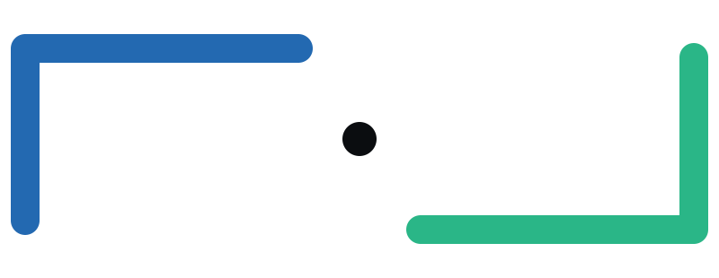
29 / نظام الأنماط
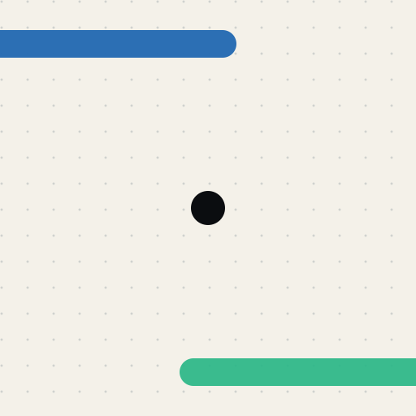
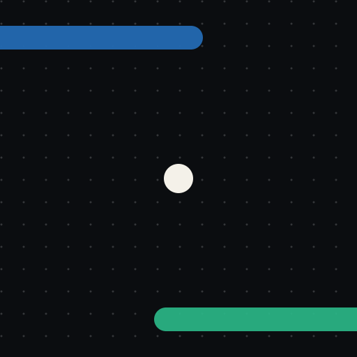
استخدم Patterns المشتقة من زوايا Connected Frame بشفافية بين 8% و30% في الخلفيات. وتُستخدم بكامل قوتها بوصفها علامة قصيرة داخل الحملات فقط. حافظ على نقطة تركيز واحدة ومساحة هادئة للنص.
30 / الأيقونات
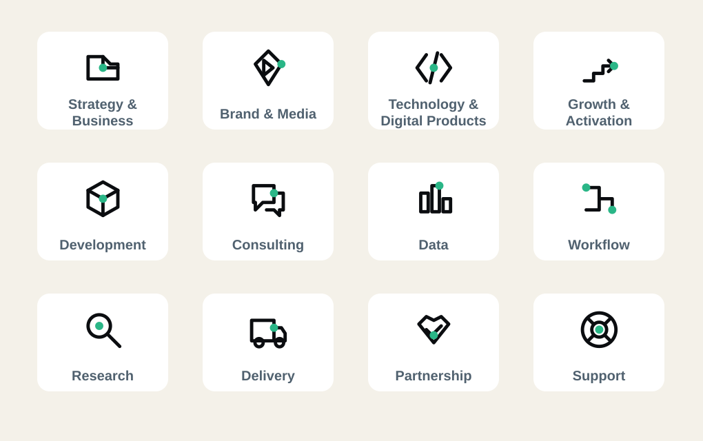
سؤال مفتوح «التطوير» اسم مؤقت في لوحة الأيقونات، ولا يحدد إن كان المقصود تطوير المنتجات والبرمجيات أم تطوير الأعمال.
31 / التصوير والصور
فرق حقيقية في ورشة أو استوديو أو موقع إنتاج أو مراجعة منتج، بإضاءة طبيعية وتفاصيل ملموسة.
أيدٍ، ونماذج أولية، ولوحات قصة، ولوحات بيانات، وأدوات إنتاج داخل سياق مفهوم.
مقارنة قبل وبعد، أو أثر مرئي، أو مقياس موثق، أو أصل جرى بناؤه؛ لا صورة احتفالية عامة.
تجنّب
صور المخزون العامة، والمصافحات التقليدية، والفرق التي تنظر إلى الكاميرا من دون سياق، والمشاهد التي لا ترتبط بقصة أو نتيجة واضحة.
سياسة الصور — مقترحة
يُوثق مصدر كل صورة وترخيصها وأي تعديلات أُجريت عليها، وتُراجع حقوق الأشخاص والمواقع قبل النشر. وتُحدد الموافقات المطلوبة بحسب السوق والغرض.
32 / Key Visual — نسخة عمل
صورة تجريبية بلا أشخاص أو شعار مضمّن. ولا يزال توثيق المصدر ومراجعة الحقوق بانتظار الاعتماد.
33 / عرض البيانات
بيانات توضيحية فقط — لا تمثل أداء INTAG
34 / نظام الحركة — توقيتات مبدئية
تظهر النقطة؛ ويُحجز هذا التوقيت للاستجابة الفورية في الواجهة.
تظهر الزاوية الزرقاء؛ ولا يُعتمد منحنى الحركة حتى يُحدد.
تكتمل الزاوية الخضراء ويظهر Connected Frame.
تحمل اللقطة الأخيرة المعنى كاملًا.
تتكوّن الزاويتان حول نقطة التركيز.
تلاشي قصير أو انتقال مباشر يحفظ التراتب نفسه.
الارتداد، والحلقات المستمرة، والحركة المنظورية الزائدة، ودوران الشعار.
35 / التطبيقات المؤسسية — محتوى تجريبي
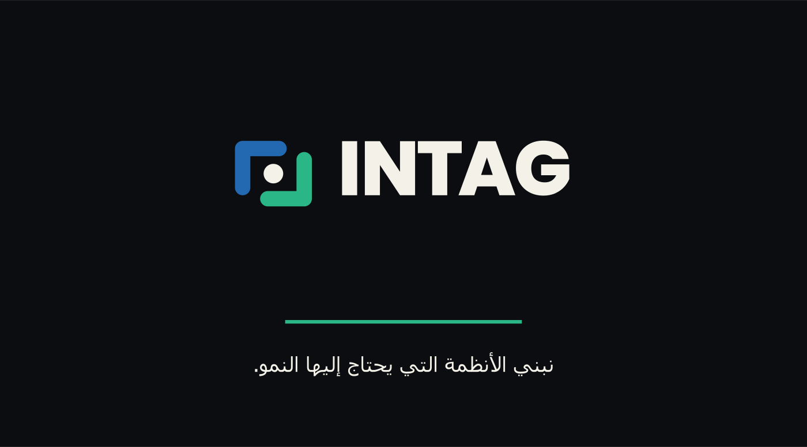
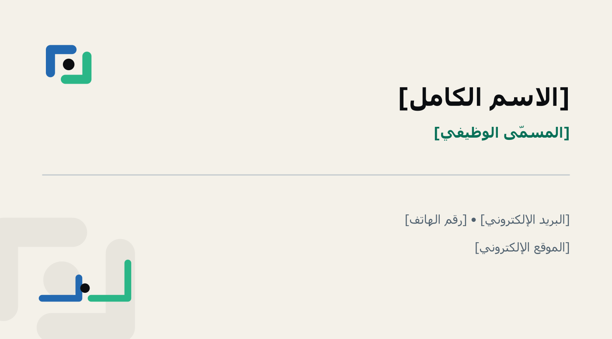
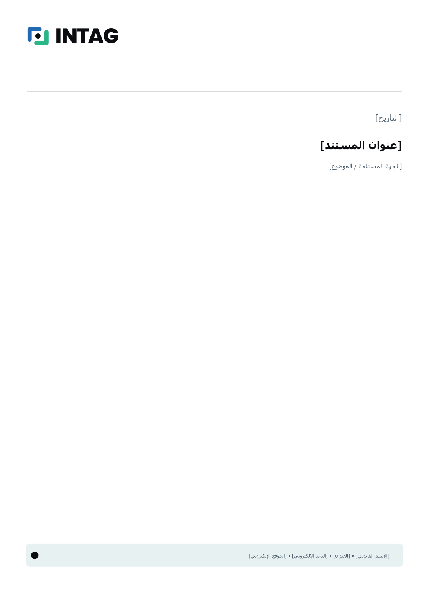
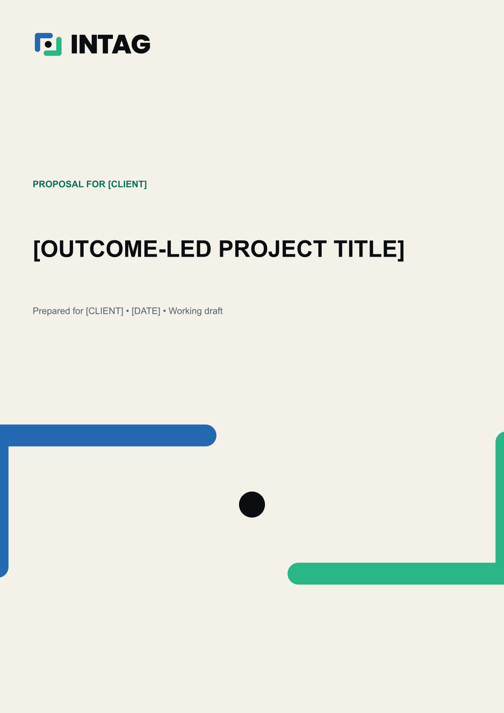
36 / محتوى المنصات الاجتماعية — نموذج
37 / العروض والموقع — محتوى تجريبي
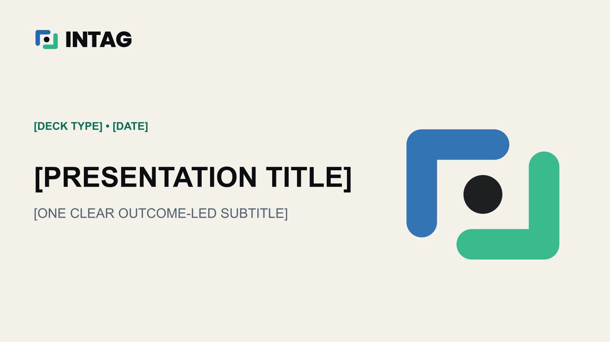
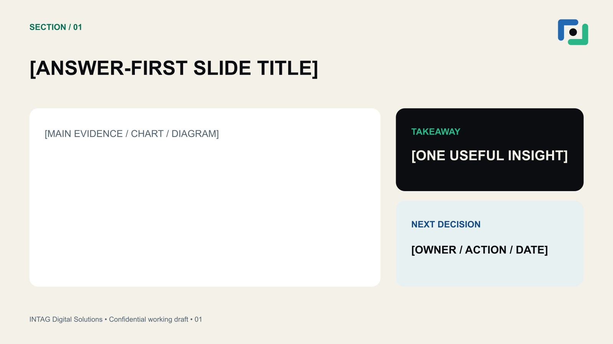
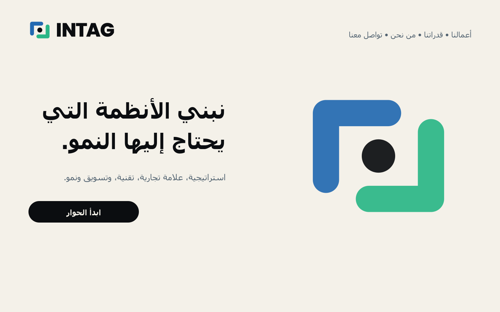
38 / التطبيقات المكانية والهدايا
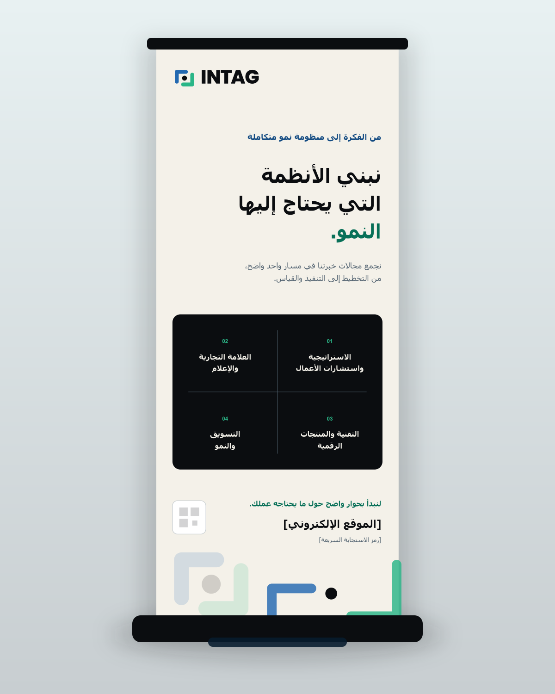
قواعد الإنتاج
39 / قائمة الأصول — للاستخدام الداخلي
| المجموعة | المحتوى | الصيغ | مكانها |
|---|---|---|---|
| منظومة الشعار | Horizontal، Stacked، Symbol، Wordmark، Reverse، Monochrome، Small-size، Avatar، وApp Icon | SVG / PNG | assets/logo/ |
| اللغة البصرية | Connected Frame، وPatterns فاتحة وداكنة، و12 Icon، وKey Visual ومقاساته | SVG / PNG / WebP | assets/patterns · icons · key-visual |
| نظام التصميم | متغيرات الألوان، وفحص التباين، وCSS/SCSS، ولوحات ASE/GPL، وخطوط مفتوحة المصدر وتراخيصها | JSON / CSS / SCSS / ASE / GPL / TTF | assets/tokens · fonts |
| القوالب | Business Card، وLetterhead، وProposal، وSocial Posts، وStory، وPowerPoint، وWebsite Hero، وEmail Signature | SVG / HTML / PPTX / DOCX | templates/ |
| الأدلة | نسخة تفاعلية، وPDF، وملفات البناء، ودليل البدء، وسجل القرارات والأسئلة | HTML / PDF / MD / PY / JS | brandbook · docs · source |
40 / الإنتاج والحقوق — نسخة عمل
استخدم sRGB، وملفات SVG المتجاوبة، وشفافية PNG، وصيغة WebP للصور، ومقاسي 1× و2×، والنصوص البديلة، واختبر الخلفيات الفاتحة والداكنة.
قيم CMYK مبدئية. ويشيع نزف 3 مم، لكن ملف اللون والحبس والطباعة الفوقية وصيغة PDF/X تُحسم مع المطبعة.
فحص العلامة التجارية والنطاقات والمعرّفات، وملكية الأصول، وعقود الموردين، وموافقات الصور تحتاج إلى مسؤول محدد بحسب البند.
أُرفق Poppins وIBM Plex Sans Arabic وفق ترخيص SIL Open Font License 1.1. راجع ملفات الترخيص المرفقة.
لا يمكن اعتماد درجة Pantone من الشاشة. ويجب إجراء المطابقة باستخدام دليل ألوان فعلي وبروفة على الخامة.
أصل بصري تجريبي لهذا المشروع. ولا يزال توثيق المصدر ومراجعة الحقوق بانتظار الاعتماد؛ لذلك لا يُستخدم في حملة عامة قبل ذلك.
41 / الحوكمة وبوابات الاعتماد
قيد الاستكمال · المسؤول: المؤسس أو مسؤول العلامة
شرط الانتقال: اعتماد الاسم والجمهور والأسواق والأولوية والمصادر.
بانتظار الاعتماد · المسؤول: المؤسس أو مسؤول العلامة
شرط الانتقال: اعتماد «من الإمكان إلى الإنجاز» بوصفه توجهًا إبداعيًا مع مبرراته.
اعتماد جزئي · المسؤول: المستخدم ومسؤول العلامة مع قائد التصميم
اعتمد المستخدم الشعار رقم 02؛ وتظل الألوان والخطوط وقواعد اللغتين بانتظار الاعتماد النهائي.
بانتظار الاعتماد · المسؤول: العلامة ومسؤولو الوظائف
شرط الانتقال: التحقق من الصور والأيقونات والحركة والبيانات والقدرات الفعلية.
بانتظار الاعتماد · المسؤول: مسؤولو الوظائف
شرط الانتقال: اختبار نقاط اتصال حقيقية بمحتوى وبيانات معتمدة.
بانتظار الاعتماد · المسؤول: مسؤول العلامة والشؤون القانونية والموردون
شرط الانتقال: اكتمال فحص الجودة والحقوق وملفات الإصدار وسجل القبول.
42 / الأسئلة والقرارات المفتوحة
تشمل القرارات المفتوحة الشريحة الأساسية، والوصف الرئيسي، والعرض المحوري، وتصنيف الخدمات إلى متاحة أو مخطط لها أو منفذة عبر شريك، ومعنى «التطوير»، والادعاءات ودراسات الحالة الموثقة.
يُسجّل كل قرار نهائي مع التاريخ، والقرار، والمسؤول، والمبرر، وحالة الاعتماد، والنسخة المتأثرة.
INTAG DIGITAL SOLUTIONS
نظام الهوية v2.0 — نسخة عمل
أُعدّ في 02 أغسطس 2026 · الشعار رقم 02 «Connected Frame» معتمد بقرار المستخدم.
أما التوجه الإبداعي والعبارة التعريفية وهيكل الخدمات والادعاءات الخارجية فما تزال قيد المراجعة.